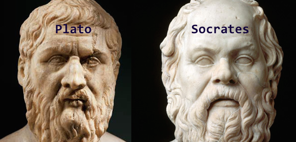

∞ ⋈ ∞ ∞ ⋈ ∞ ∞ ⋈ ∞ ∞ ⋈ ∞ ∞ ⋈ ∞ ∞ ⋈ ∞
Plato
The following publications by Plato (Stephanus numbers included), for sale at Amazon and iBooks/iTunes.
The Republic
Foreword to The Republic:
This publication makes Benjamin Jowett's translation of the Republic available, with Stephanus numbers and with anchors to Jowett's introduction. The anchors and Stephanus numbers make discourse possible, with reference to Jowett's translation and his comments, as well as with reference to other translations, which have Stephanus numbers. Jowett's translation was compared with other translations, especially the translation of Desmond Lee, published by Penguin. The different views of Desmond Lee and Benjamin Jowett are apparent, when comparing the different words they used. The different translations give different metaphysical views. The Republic, written around 380 BC by Plato, is one of the most influential books ever written. Socrates implied in the book that "the god" who originated the idea of beds, for example, contributed substantially to the wellbeing of society and to job creation for carpenters. This idea about creative "gods", coupled with the idea of the "The Creator" ("God"), cause Caiaphas Syndrome, which negatively impacts Intellectual Property and sustainability of large populations. Understanding the psychological implications, relevant at "spiritual property" (as described in the Netherlands), is enhanced by reading the Republic. Republic and other books by Plato were used to abstract Plato's philosophy about Form, which could also mean philosophy about ideas. Basically, Socrates claimed that Form is the highest truth. Another important matter, is Socrates's method of reasoning, called dialectical reasoning. Dialectical reasoning, primarily, is a method whereby essence is looked for. Contemporary non-reductionist philosophy, for example the philosophies of Roy Clouser and Dooyeweerd, agree not with dialectical philosophy, because, according to non-reductionist philosophy, putting emphases on different aspects and not putting emphasis on an essence, is a more rational manner of reasoning. An argument, for example, can be; Communism put too much emphasis on labour and thereby, another important matter, Accounting for ideas, was not regarded important enough. After studying non-reductionist philosophy another argument could be that putting emphasis on one idea only, for example "the truth", is irrational. Having at least two ideas, for example "the truth" and "love" (social contract theory) above self, is a more rational way to take decisions.
Marquard Dirk Pienaar,
28 November 2015.
Ion
The dialogue, Ion, is the shortest dialogue recorded by Plato. The dialogue is between Socrates, the well-known philosopher and Ion, a rhapsode. They discuss various aspects relating to specialisation and innovation in work environments. Benjamin Jowett translated and commented on the dialogues of Plato. This version includes Stephanus numbers and par. numbers to Jowett's comments, which can be used for research purposes.